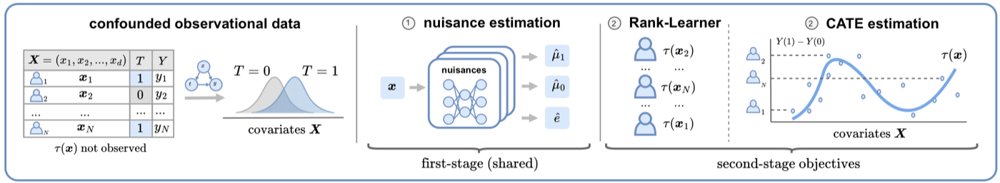
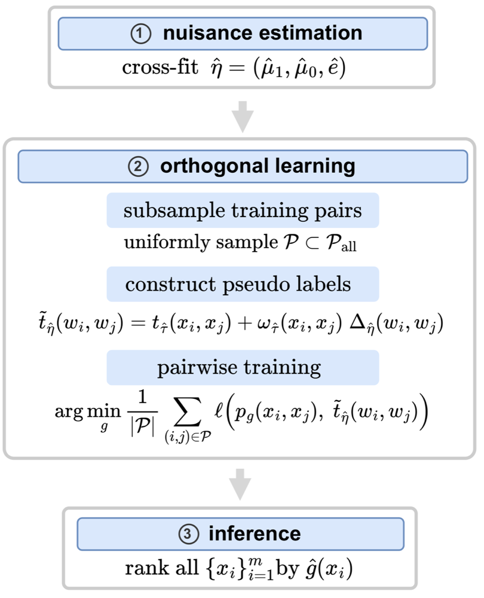

- 順位だけを学習する損失を最小にする関数は \(g(x)=\tau(x)/\kappa+c\) の形になる。並べる関数の順序は効果 \(\tau\) の順序と一致し、効果の大きさそのものを当てる必要はない。
- ネイマン直交な損失傾向スコアや応答曲面の推定誤差が、学習の勾配に1次の範囲では影響しない。著者らによれば、効果の順位を学習する直交な二段階学習器はこれが初めてである。
- AUTOC 1.00 対 0.69合成データで学習データが \(n=100\) のときの平均値（Rank-learner 対プラグイン順位学習器、真の効果で並べた場合は 1.40）。論文 Table 3。
資源が限られた場面で必要なのは、効果の大きさではなく効果の順位である
集中治療の枠が足りないときに誰を優先するか。どの顧客に引き留めのオファーやコストのかかる広告を出すか。どの人を政策の対象にするか。論文が挙げるこれらの例では、処置の効果が大きい人から順に資源を割り当てる。決め手になるのは効果の相対的な順序で、正確な値ではない。
ところが、観察データから効果の順位を直接学習する研究は少ない。情報検索で使われる learning-to-rank は、教師として正しい順序を必要とする。しかし個人の処置効果は観測できないため、そのままでは使えない。
CATE を推定してから並べる方法は、順位付けに必要な以上に難しい問題を解いている
データは共変量 \(X\)、二値の処置 \(T\in\{0,1\}\)、結果 \(Y\) からなる。条件付き平均処置効果（CATE）は \(\tau(x)=\mathbb{E}[Y(1)-Y(0)\mid X=x]\) で、一致性・正値性・無交絡の仮定のもとで \(\tau(x)=\mu_1(x)-\mu_0(x)\) と書ける。ここで \(\mu_t(x)=\mathbb{E}[Y\mid T=t,X=x]\) は応答曲面、\(e(x)=P(T=1\mid X=x)\) は傾向スコアである。この3つをまとめて局外関数 \(\eta=(\mu_1,\mu_0,e)\) と呼ぶ。
素朴な方法は CATE の二乗誤差 \(\mathcal{L}^{\text{cate}}=\mathbb{E}[(g(X)-\tau(X))^2]\) を最小にする。その解は \(g=\tau\) だけで、効果の関数を形まで丸ごと当てる必要がある。一方、ペアの大小 \(\mathbf{I}\{\tau(X)>\tau(X')\}\) を教師とする二値交差エントロピー \(\mathcal{L}^{\text{bin}}\) では、\(\tau\) を任意の狭義単調増加関数 \(h\) で変換した \(h(\tau(x))\) がすべて最適解（下限に限りなく近づく解）になる。順位付けには制約の弱い後者で足りる。

推定した効果をそのまま教師にすると、局外関数の推定誤差が順位の学習に入り込む
\(\tau\) は観測できないので、応答曲面の推定値から作った \(\hat\tau=\hat\mu_1-\hat\mu_0\) で教師を作ることになる。これがプラグイン順位学習器である。この方法では、局外関数の推定誤差が損失に直接入り、学習した関数 \(g\) にまで及ぶ（プラグインバイアス）。
対策として知られているのが、損失をネイマン直交にすることである。真の局外関数 \(\eta^0\) と最小解 \(g^0\) で、次の交差微分が任意の方向 \(\Delta g,\Delta\eta\) について0になればよい。
直観的には、\(g\) についての勾配が局外関数の推定誤差に1次の範囲では動かない、という性質である。直交化には影響関数による補正を使うが、そのためには損失が \(\tau\) に滑らかに依存していなければならない。指示関数の教師はこの条件を満たさないので、論文は次のソフトな教師に置き換える。
\(\kappa\) を小さくすると教師は0か1に近づき、大きくすると0.5に近づく。
順位が曖昧なペアほど、二重頑健スコアによる補正を強くかける
影響関数でソフトな損失を補正すると、補正分はすべて教師ラベルの中に収まる。Rank-learner の損失は通常の二値交差エントロピーの教師を次の擬似ラベルに置き換えたものである（論文 Theorem 5.1）。
\(\phi_\eta\) は CATE の二重頑健スコア \(\frac{T}{e(X)}(Y-\mu_1(X))-\frac{1-T}{1-e(X)}(Y-\mu_0(X))+\mu_1(X)-\mu_0(X)\) で、\(p_g(X,X')=\sigma(g(X)-g(X'))\) が「\(X\) を \(X'\) より上に置く」確率にあたる。論文はこの損失がネイマン直交であることを証明した。さらに、真の局外関数のもとでの最小解が \(g(x)=\tau^0(x)/\kappa+c\) となり、効果の順序を復元することも示している（Theorem 5.2）。
補正の重み \(\omega_\tau\) は、ソフトな教師が0.5に近いペア、つまり順序が曖昧なペアで大きくなる。\(\kappa\) を小さくすると、補正のかかるペアは減るが、残ったペアには強くかかる。論文は \(\kappa\) の選び方をバイアスと分散のトレードオフとして説明している。\(\kappa\) が小さいほど純粋な順位付けに近づくが、有限の標本では擬似ラベルのばらつきが大きくなる。下の図で \(\kappa\) を動かすと、この関係を確かめられる。
補正の重みの最大値 \(\max\omega=1/(4\kappa)\)：0.25
重みが最大値の半分以上になる差の幅：±1.76
候補は論文の実験で使った \(\kappa\in\{0.25,0.5,1,1.5,3\}\)。
横軸は2人の効果の差 \(\tau(x)-\tau(x')\)。灰色の線はソフトな教師 \(t_\tau\)（左の目盛り）、青い線は補正の重み \(\omega_\tau\)（右の目盛り）。論文の式から解説者が作図した模式図で、実験の値ではない。
学習はペアを間引いて行い、推論は1人ずつのスコアだけで済む
手順は3段階に分かれる。(1) 局外関数 \(\hat\eta=(\hat\mu_1,\hat\mu_0,\hat e)\) をクロスフィッティングで推定する。(2) 学習ペアを一様に抜き出し、擬似ラベルを作って、ペアの二値交差エントロピーを最小化する。(3) 学習したスコア \(\hat g(x)\) で全員を並べる。1段目と2段目のどちらにも任意の機械学習モデルを使える。直交性は擬似ラベルの作り方にしか現れないので、2段目は普通のペア単位の learning-to-rank と同じ形で学習できる。
\(n\) 人のデータからはペアが \(n^2\) 組できる。論文はエポックごとにその一部だけを抜き出して学習する。\(n=1{,}000\) の合成データでは、およそ1%のペアを使うだけで、到達できる AUTOC の大半が得られ、それ以上増やしても改善は小さかった。\(\kappa\) などのハイパーパラメータは、検証データで AUTOC の近似値が最大になるように選ぶ。補正後の擬似ラベルは \((0,1)\) からはみ出すことがあるため、実験では \((0,1)\) に切り詰めている。

合成・半合成・Criteo のすべてで、Rank-learner の平均値が比較手法の中で最も高かった
比較相手は CATE を推定して並べる T-learner と DR-learner（後者はネイマン直交）、それに直交化しないプラグイン順位学習器である。すべての方法で隠れ層1層の同じニューラルネットを使う。合成データと半合成データでは、真の効果で計算した AUTOC で評価した。AUTOC は、効果が大きいと予測された順に処置したときの利得を、処置する割合すべてについて平均した指標である。
合成データ（論文 Table 3）では、どの \(n\) でも Rank-learner の平均が最も高く、差は \(n\) が小さい範囲で大きかった。\(n\) が増えると局外関数の推定が改善し、差は縮まる。MovieLens・MIMIC-III・CPS の共変量を使った半合成データ（\(n=1{,}000\)、Table 4）でも平均は最も高かった（それぞれ 1.35・1.18・0.95。DR-learner は 1.34・1.17・0.92）。広告の実データ Criteo では、学習データに人工的に交絡を入れ、無作為化されたテストデータの AUUC で評価した（Table 5）。ここでも平均は最も高かった。ただしテストデータ5万件では 5.19 ± 1.87（×10−3）と、標準偏差が大きい。
局外関数をあえて線形モデルで誤って指定した \(n=250\) の実験（付録 Table 11）では、すべての方法で性能が落ちた。落ち幅は直交でない方法（T-learner 0.96→0.76、プラグイン順位学習器 0.95→0.66）のほうが、直交な方法（DR-learner 1.16→1.09、Rank-learner 1.28→1.19）より大きかった。
Rank-learner は二値の処置で効果の順位を学習する方法で、コストと予算は目的に含めない
- 最適化するもの 1種類の結果 \(Y\) についての CATE \(\tau(x)\) の順序。評価に使う AUTOC と AUUC は処置する割合（予算）を1つに決めず、すべての割合で平均した指標である。
- コストの仮定 処置のコストは扱わない。そのため、人によってコストが違う場合や、コストが処置後の行動で決まる場合も扱っていない。予算や容量の制約については、付録 A で次のように述べている。順位を学習しておけば、予算が変わっても学習し直さずに方策を作れる。ただし、効果がしきい値を超えるかで決める判断には、順位だけでなく効果の大きさが必要になる。
- 処置の種類 二値の処置 \(T\in\{0,1\}\) のみ。多値の処置は関連研究で触れるだけである。
- データ 無交絡と正値性を仮定した観察データ。理論の設定では結果は連続値だが、Criteo の実験では「サイトを訪れたか」の二値の結果を使っている。
解説者の補足として、文献リストの他の研究との関係を書いておく。全員の処置コストが等しければ、予算内の人数を効果の大きい順に選べばよい。この場合は効果の順位がそのまま割当ての順になる。一方、購入したときだけ定額の特典費用がかかる設定（西村らの 2023 年の研究）では、1人あたりの期待コストが \(C\cdot\mathbb{E}[Y(1)]\) となって人ごとに違う。そのため、並べる量は \(\mathbb{E}[S(1)-S(0)]/(C\cdot\mathbb{E}[Y(1)])\) のような比になる。このような比の順位に同じ直交化の作り方を使えるかどうかは、論文では検討されていない。
@InProceedings{pmlr-v306-arno26a,
title = {Rank-Learner: Orthogonal Ranking of Treatment Effects},
author = {Arno, Henri and Frauen, Dennis and Javurek, Emil and Demeester, Thomas and Feuerriegel, Stefan},
booktitle = {Proceedings of the 43rd International Conference on Machine Learning},
pages = {3600--3632},
year = {2026},
volume = {306},
series = {Proceedings of Machine Learning Research},
publisher = {PMLR},
url = {https://proceedings.mlr.press/v306/arno26a.html}
}